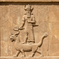

Skrytý význam symbolů
Text se zabývá symbolikou spojovanou s Ilumináty, zejména Horovým okem (Oko prozřetelnosti) a sovou Minervy. Zkoumá hluboké mytologické kořeny těchto symbolů ve starověkém Egyptě, Řecku a Mezopotámii, rozebírá jejich význam (prozřetelnost, moudrost) a naznačuje, že jejich přítomnost v moderní kultuře může být pro autora důkazem, že vliv Iluminátů nemusí být pouhou konspirací.
Symbolika a mytologie
Ilumináti
. Ilumináti Ilumináti jsou v textu popsáni jako řád, který založil Adam Weishaupt a jenž vycházel z myšlenek osvícenství. Oficiální cíle: Veřejně hlásali "práci na sobě" (vycházející z řeckého "poznej sám sebe") a upřednostňovali vládu rozumu. Metody: Své členy získávali v zednářských lóžích, které infiltrovali. Skutečné cíle (dle textu): Jejich snahou bylo prosazovat v lóžích své myšlenky s cílem ovládat svět na pozadí. Vztah k symbolice: Ačkoli chtěli odstranit vliv církve a mýtů, sami neváhali jejich symboly používat. Text naznačuje, že jejich současná existence "žádnou konspirací být nemusí".
Horovo oko
Horovo oko, známé též jako Oko prozřetelnosti, je symbol často spojovaný s Ilumináty (ačkoli text to označuje za možnou konspiraci) a zároveň je součástí křesťanské symboliky. Původ má v Egyptě, kde patřilo bohu Horovi a symbolizovalo "prozřetelnost" – schopnost vidět a chápat přítomnost i budoucnost. Mytologické paralely lze nalézt u řeckého Apollóna nebo mezopotámského Marduka. Text také zmiňuje jeho moderní výskyt, například v klipech Lady Gaga.
Sova Minerva
Text tento symbol představuje jako "další symbol, který ilumináti používali". Původ (Řím): Sova byla symbolem Minervy, římské bohyně války a moudrosti. Evivalent (Řecko): Minerva je římskou obdobou řecké bohyně Palas Athény. I ona vlastnila sovu, která byla symbolem moudrosti. Příklad výskytu (dle textu): Symbol sovy se objevuje například ve filmu "Souboj titánů", který zpracovává řeckou legendu o Perseovi, jemuž sova pomáhala získat hlavu Medusy.
Hlavní postavy
-

Hor
-
Minerva
-
Apolon
-

Marduk